Favorite Movies
Parasite
Director: Bong Joon-Ho
"He'd run and hide like a cockroach. Kids, you know at our house, when you turn on the light, and the cockroaches scatter?" - Kim Chung-sook
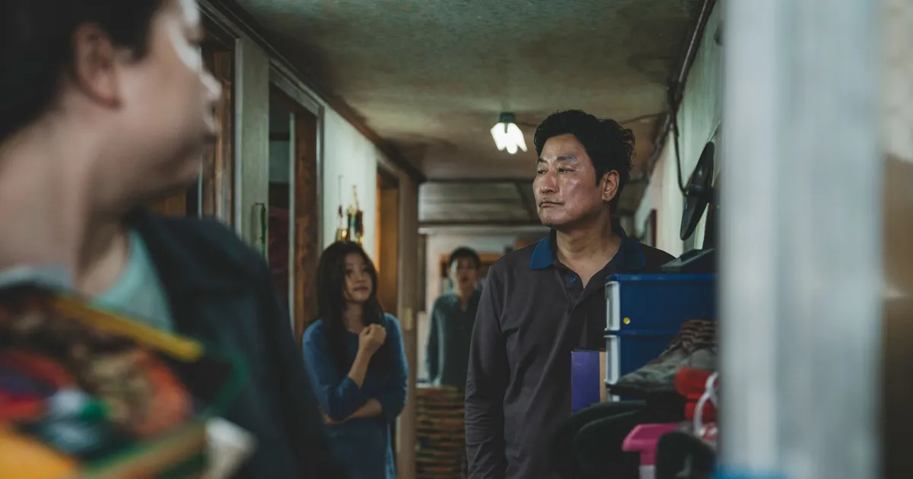
The story follows the Kim family, who live in poverty in a semi-basement apartment. The family consists of the father, Ki-taek; the mother, Chung-sook; the son, Ki-woo; and the daughter, Ki-jung. Ki-woo, a young man with little prospects, gets an opportunity to tutor the daughter of the wealthy Park family, who live in a luxurious, modern home. As Ki-woo begins tutoring, he orchestrates a plan to have his family infiltrate the Park household by securing jobs for them under false pretenses.
Goodfellas
Director: Martin Scorsese
"As far back as I can remember, I always wanted to be a gangster" - Henry Hill
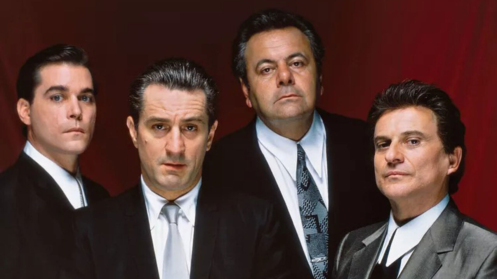 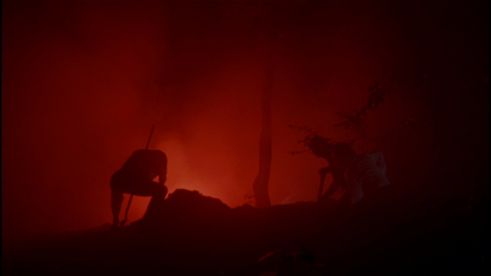 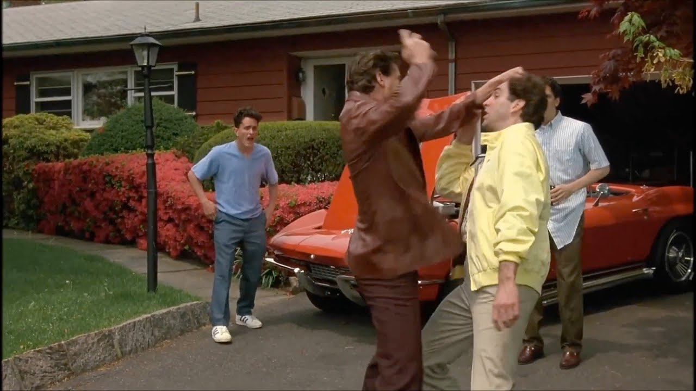
This film views the mob lives of three pivotal figures in the 1960's and 70's New York. Henry Hill is a local boy turned gangster in a neighborhood full of the roughest and toughest. Tommy DeVito is a purebred gangster, who turns out to be Henry's best friend. Jimmy Conway puts the two of them together, and runs some of the biggest hijacks and burglaries the town has ever seen. After an extended jail sentence, Henry must sneak around the back of the local mob boss, Paulie Cicero, to live the life of luxury he has always dreamed of. In the end, the friends end up in a hell of a jam, and must do anything they can to save each other, and stay alive.
Eyes Wide Shut
Director: Stanley Kubrick
"No dream is ever just a dream." - Bill Hartford
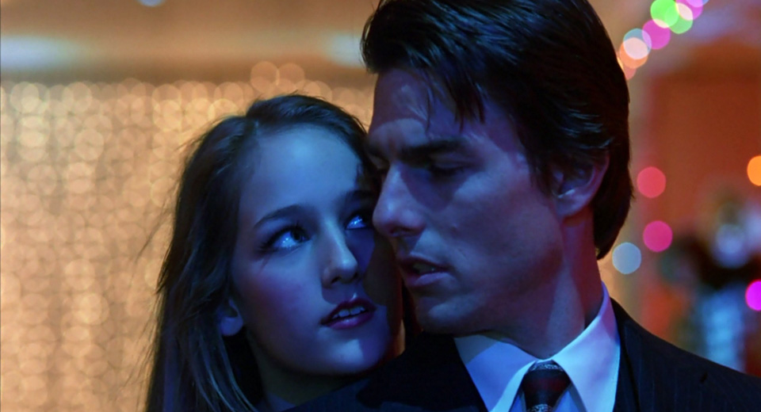 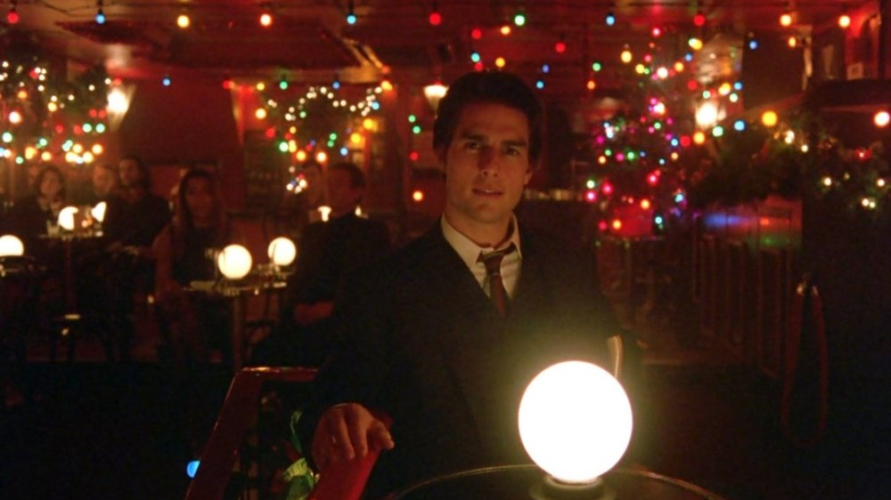 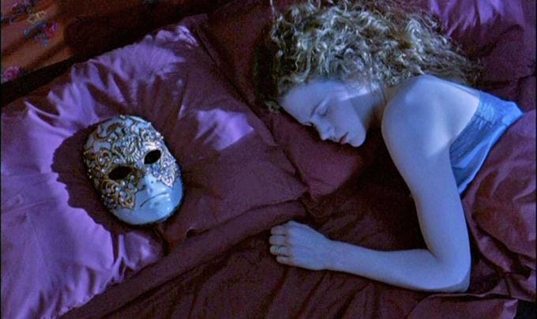
After Dr. Bill Hartford's (Tom Cruise) wife, Alice (Nicole Kidman), admits to having sexual fantasies about a man she met, Bill becomes obsessed with having a sexual encounter. He discovers an underground sexual group and attends one of their meetings -- and quickly discovers that he is in over his head.
The Prestige
Director: Christopher Nolan
"Now you're looking for the secret... but you won't find it, because you’re not really looking. You don’t really want to know. You want to be fooled." - John Cutter
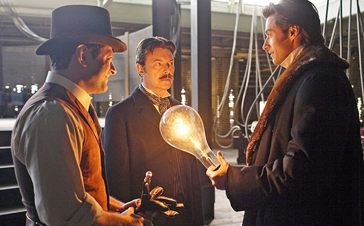 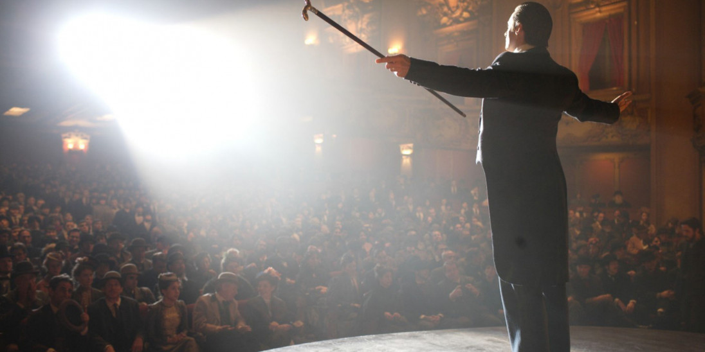 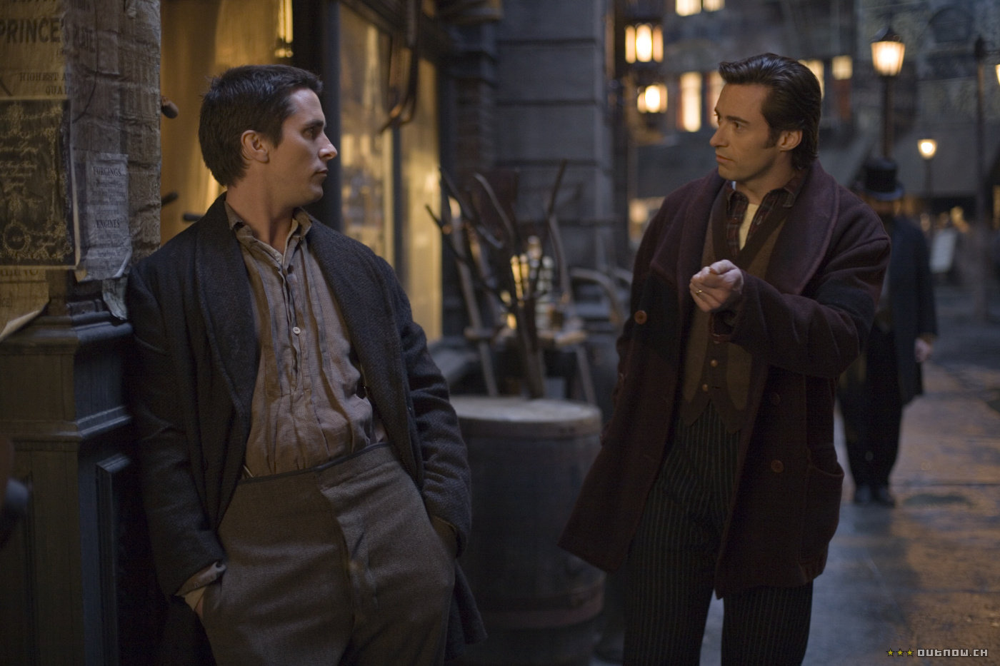
Period thriller set in Edwardian London where two rival magicians, partners until the tragic death of an assistant during a show, feud bitterly after one of them performs the ultimate magic trick - teleportation. His rival tries desperately to uncover the secret of his routine, experimenting with dangerous new science as his quest takes him to the brink of insanity and jeopardises the lives of everyone around the pair.
Interstellar
Director: Christopher Nolan
"Don't let me leave, Murph..." - Cooper
 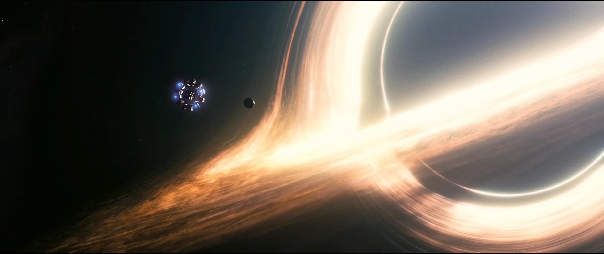
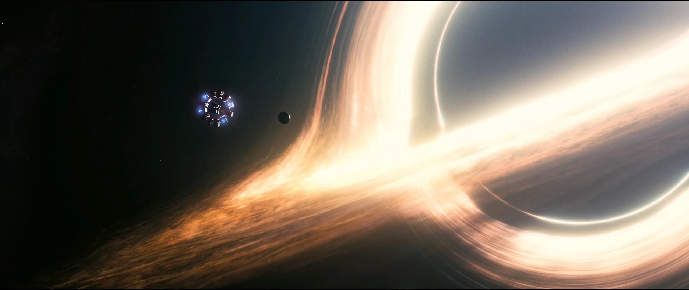
In Earth's future, a global crop blight and second Dust Bowl are slowly rendering the planet uninhabitable. Professor Brand (Michael Caine), a brilliant NASA physicist, is working on plans to save mankind by transporting Earth's population to a new home via a wormhole. But first, Brand must send former NASA pilot Cooper (Matthew McConaughey) and a team of researchers through the wormhole and across the galaxy to find out which of three planets could be mankind's new home.
Inglourious Basterds
Director: Quentin Tarantino
"Say auf wiedersehen to your Nazi balls." - Hugo Stiglitz
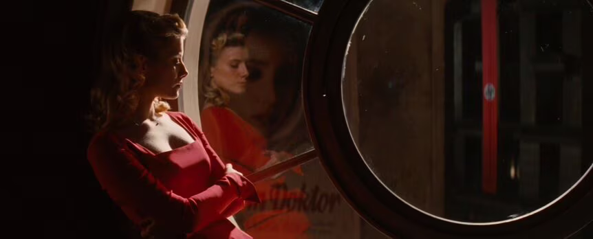 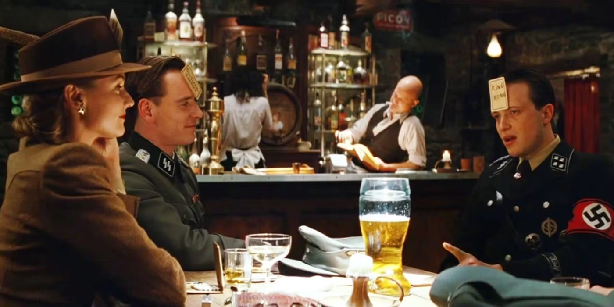 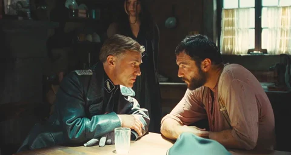
It is the first year of Germany's occupation of France. Allied officer Lt. Aldo Raine (Brad Pitt) assembles a team of Jewish soldiers to commit violent acts of retribution against the Nazis, including the taking of their scalps. He and his men join forces with Bridget von Hammersmark, a German actress and undercover agent, to bring down the leaders of the Third Reich. Their fates converge with theater owner Shosanna Dreyfus, who seeks to avenge the Nazis' execution of her family.